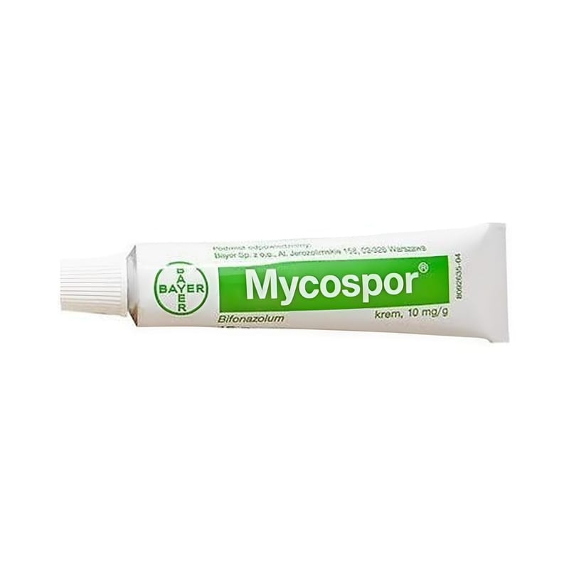

Mycospor %1 Krem, 10 g

Ne için kullanılır
KT · Bölüm 1• MYCOSPOR’un içeriğindeki etkin madde bifonazoldür. Bifonazol etkin maddesi, imidazol türevi adı verilen bir ilaç grubuna dahildir. Bu gruptaki ilaçlar mantar tedavisinde kullanılır. • MYCOSPOR, beyaz bir kremdir ve 10 gramlık tüpler içinde kullanıma sunulmuştur. 1 gram krem 0,01 gram bifonazol (etkin madde) içerir. • MYCOSPOR, dermatofitler, mayalar, küfler ve diğer mantarların neden olduğu derideki mantar enfeksiyonlarının örneğin el ve ayaklarda oluşan mantar enfeksiyonları (atlet ayağı, tinea manuum), deri ve deri kıvrımlarındaki mantar enfeksiyonları (tinea corporis, tinea inguinalis), pityriasis versicolor (Malassezia furfur adlı bir mantarın neden olduğu bir mantar hastalığı); yüzeyel kandidiyazis (Candida türünden bir mantarın neden olduğu enfeksiyon) tedavisinde kullanılır. Bu ilacı kullanmaya başlamadan önce bu KULLANMA TALİMATINI dikkatlice okuyunuz, çünkü sizin için önemli bilgiler içermektedir.
• Bu kullanma talimatını saklayınız. Daha sonra tekrar okumaya ihtiyaç duyabilirsiniz. • Eğer ilave sorularınız olursa, lütfen doktorunuza veya eczacınıza danışınız. • Bu ilaç kişisel olarak size reçete edilmiştir, başkalarına vermeyiniz. • Bu ilacın kullanımı sırasında, doktora veya hastaneye gittiğinizde bu ilacı kullandığınızı doktorunuza söyleyiniz. • Bu t alimatta yazılanlara aynen uyunuz. İlaç hakkında size önerilen dozun dışında yüksek veya düşük doz kullanmayınız.